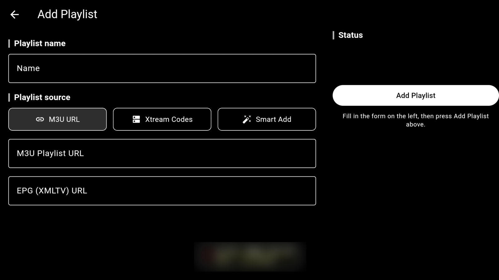

01 / PLAYLISTS & SERVERS
Connect once, stay connected
Providers go down. The app is built on the assumption that yours will.
- As many playlists as you want Xtream Codes logins and M3U / M3U8 URLs side by side. Each one can be switched on or off independently, and everything that's on merges into a single set of tabs.
- Backup servers Give a playlist alternate server addresses. If the main one won't answer, NoXPlayer tries each backup a few seconds apart, remembers which one replied, and starts there next time.
- Reconnects mid-stream A live channel that drops while you're watching falls back through those same backup servers rather than dumping you out to the menu.
- Subscription expiry When your provider reports an expiry date for the account, the app shows it — so the day it lapses isn't a mystery.
- Errors that say something A failed connection names the server that failed and gives you a Retry action, instead of an empty screen and a shrug.
